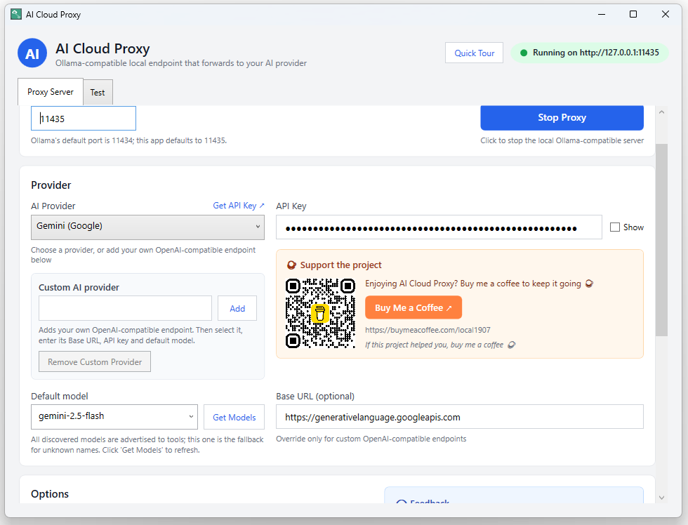
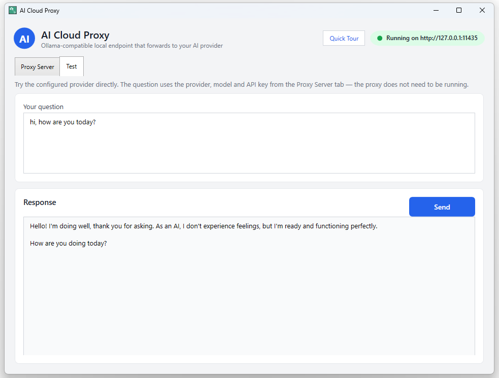
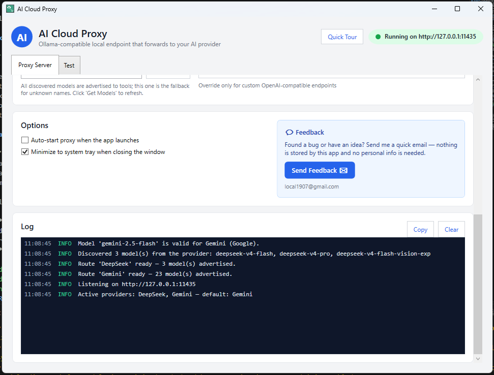
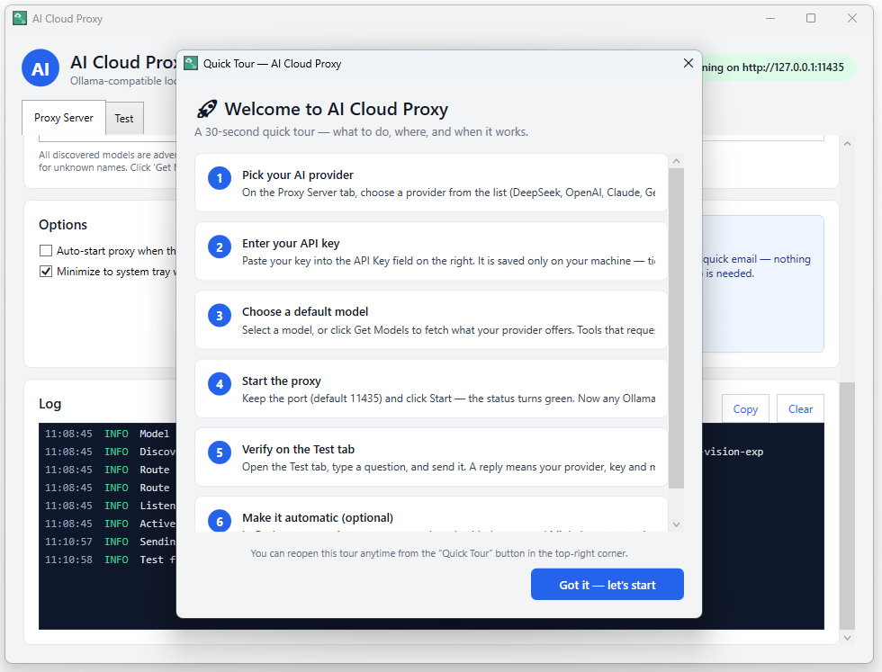
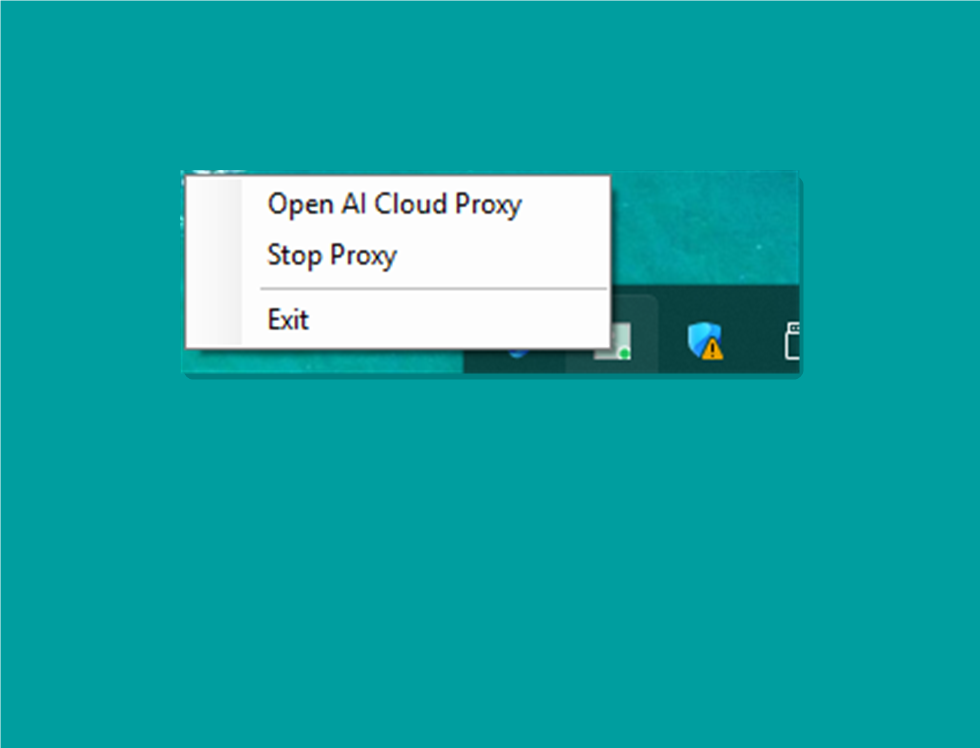

Ollama-compatible API
/api/chat, /api/generate and /api/show with
NDJSON streaming — your existing Ollama clients keep working unchanged.
DeepSeek · OpenAI · Gemini · Claude — no local LLM needed
AI Cloud Proxy is a free Windows app that exposes an
Ollama-compatible server on your machine and forwards every request
to the cloud provider you choose. Point your VS Code extension, Continue, Cline or
any Ollama client at 127.0.0.1 — no model downloads, no GPU required.
$ curl http://127.0.0.1:11435/api/chat -d '{
"model": "deepseek-v4-flash@DeepSeek",
"messages": [{ "role": "user",
"content": "Hello!" }],
"stream": true
}'Hello! I'm a cloud model reached through an Ollama-compatible endpoint. 🎉
Features
/api/chat, /api/generate and /api/show with
NDJSON streaming — your existing Ollama clients keep working unchanged.
/v1/chat/completions (SSE) and /v1/models for OpenAI-style
tools and libraries.
Every provider with a saved key is active at once. Models are advertised as
model@Provider (e.g. gemini-2.5-flash@Gemini) and requests
route to the provider that owns them.
“Get Models” pulls the live model list from your provider and fills the dropdown. On start, your configured model is validated and you’re warned if it vanished.
Each provider keeps its own API key, base URL and last model. Switch providers and everything is restored automatically.
Send a question and watch the answer stream straight from the selected provider — perfect for verifying your setup in seconds.
Close the window and it keeps running next to the clock. Reopen or exit from the tray icon anytime.
Add your own OpenAI-compatible endpoint (name + base URL + key + model) and it appears in the dropdown like any other provider.
Tip: put the full API path in the Base URL — e.g.
https://openrouter.ai/api/v1 — because the app appends
/chat/completions and /models to it.
Keys and settings live in %APPDATA%\AiCloudProxy. No accounts, no
tracking — requests go only to the provider you choose.
How it works
AI Cloud Proxy speaks the Ollama wire format to your tools and each provider’s native format to the cloud — translating on the fly.
VS Code extension, Continue, Cline, curl… anything that speaks Ollama.
POST /api/chat
In-process HTTP listener that translates to each provider’s native format.
127.0.0.1:11435
DeepSeek, OpenAI, Gemini or Claude answers and streams back the same way.
provider API
| Provider | Default model | Wire format |
|---|---|---|
| DeepSeek | deepseek-v4-flash | OpenAI-compatible |
| OpenAI | gpt-4o-mini | OpenAI-compatible |
| Gemini | gemini-2.5-flash | generateContent |
| Claude | claude-sonnet-4-5-20250929 | Anthropic Messages |
| Custom | (yours) | OpenAI-compatible |
💡 DeepSeek also exposes deepseek-v4-pro and the experimental
deepseek-v4-flash-vision-exp (image input) — use Get Models
in the app to fill the dropdown automatically.
Endpoints
/api/chatOllama chat format — NDJSON streaming
/api/generateOllama generate format — NDJSON streaming
/api/showPer-model metadata + capabilities (VS 2026 Copilot BYOM)
/v1/chat/completionsOpenAI format — SSE streaming
/api/tagsAll discovered models with capabilities & token limits
/v1/modelsOpenAI-compatible model list
Quick start
11435).http://127.0.0.1:11435 (or your port) — done!AI Cloud Proxy advertises tool-calling capabilities and token limits via
/api/show and /api/tags, so VS 2026 Copilot lists its models.
Enable Bring Your Own Key in Tools → Options, add AI Cloud Proxy as an
Ollama provider at http://127.0.0.1:11435, then pick a model
in Agent mode.
Screenshots





FAQ
No. AI Cloud Proxy is a self-contained listener. If a tool expects an Ollama server, point it at AI Cloud Proxy instead — nothing else needs to be installed.
DeepSeek, OpenAI, Gemini and Claude out of the box, plus any custom OpenAI-compatible endpoint you add. Multiple providers can be active at the same time.
Anything that speaks the Ollama HTTP API: VS Code extensions, Continue, Cline, LangChain integrations, scripts and more. OpenAI-format tools work too.
AI Cloud Proxy stores your keys and settings locally (no accounts, no telemetry). Chat requests go directly to the provider you selected — review that provider’s privacy policy for how they handle your prompts.
The default is 11435, but you can change it to anything you like from
the main window.
Bring your favorite cloud AI into the tools you already use.